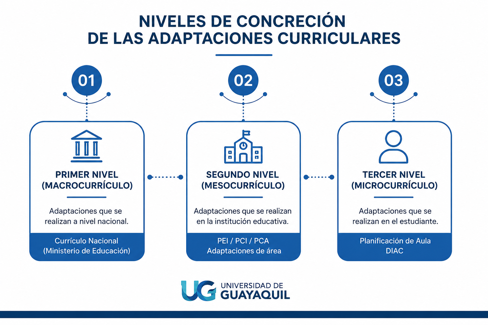

Clasificación
CLASIFICACIÓN DE LAS ADAPTACIONES CURRICULARES (SEGÚN EL NIVEL DE CONCRECIÓN, SEGÚN EL ENTE, SEGÚN EL GRADO DE AFECTACIÓN, SEGÚN LA DURACIÓN)
CARACTERÍSTICAS DE CADA TIPO.
Tipos de Adaptaciones Curriculares
Las adaptaciones curriculares (AC) son ajustes o modificaciones que se realizan en los diferentes elementos del currículo para responder a las necesidades educativas de los estudiantes. Existen varias clasificaciones según el criterio que se use.
Lectura facilitada
CLASIFICACIÓN DE LAS ADAPTACIONES CURRICULARES (SEGÚN EL NIVEL DE CONCRECIÓN, SEGÚN EL ENTE, SEGÚN EL GRADO DE AFECTACIÓN, SEGÚN LA DURACIÓN)
1. Según el nivel de concreción (¿Qué tanto se ajusta?)
- Macrocurricular: Es el plan nacional que da el Ministerio de Educación para todas las escuelas.
- Mesocurricular: Es el plan que hace cada institución educativa para adaptarlo a su propia realidad.
- Microcurricular: Son los ajustes específicos que el docente hace en el salón para un estudiante en particular.
2. Según el ente (¿Quién las hace?)
- De centro: Son cambios que hace toda la institución, por ejemplo, mejorar la infraestructura o los recursos compartidos.
- De aula: Son ajustes que el profesor aplica directamente en su planificación diaria para sus estudiantes.
3. Según el grado de afectación (¿Qué tanto cambia el contenido?)
- Grado 1 (Acceso): Solo se cambia el entorno, los materiales o la forma de comunicarse, sin tocar los objetivos.
- Grado 2 (No significativa): Se cambia la metodología, las actividades y cómo se evalúa, pero se mantienen los objetivos y destrezas.
- Grado 3 (Significativa): Se hacen cambios profundos en los objetivos y destrezas, usualmente por necesidades asociadas a una discapacidad.
4. Según la duración (¿Cuánto tiempo duran?)
- Temporales: Son ajustes que se usan solo por un tiempo específico, como durante una recuperación médica.
- Permanentes: Son adaptaciones que el estudiante necesitará durante todo su proceso escolar..
Niveles de concreción

Adaptaciones curriculares según el nivel de concreción
Las adaptaciones curriculares según el nivel de concreción hacen referencia al nivel del sistema educativo en el que se realizan las modificaciones del currículo. Estas pueden implementarse desde las políticas nacionales hasta la planificación individual de cada estudiante.
Primer nivel de concreción (Macrocurrículo)
El primer nivel corresponde al currículo nacional, elaborado por el Ministerio de Educación del Ecuador. En este nivel se establecen los lineamientos generales que orientan el proceso educativo en todo el país, incluyendo los objetivos, contenidos, destrezas, criterios de evaluación y principios pedagógicos.
Este currículo tiene un enfoque inclusivo, intercultural y flexible, con el propósito de garantizar una educación de calidad para todos los estudiantes. Las instituciones educativas deben tomar este currículo como referencia para desarrollar su planificación.
Características
- Es elaborado por el Ministerio de Educación.
- Tiene aplicación nacional y carácter obligatorio.
- Define los objetivos y contenidos generales del aprendizaje.
- Promueve la inclusión, la equidad y el respeto a la diversidad.
Ejemplo
El Ministerio de Educación establece las destrezas que deben desarrollarse en Matemática para séptimo año de Educación General Básica. Todas las instituciones educativas del país utilizan estas orientaciones como base para su planificación.
Segundo nivel de concreción (Mesocurrículo)
El segundo nivel corresponde a la planificación que realiza cada institución educativa considerando las características de su contexto y de sus estudiantes. En este nivel se elaboran documentos institucionales como el Proyecto Educativo Institucional (PEI), la Planificación Curricular Institucional (PCI) y la Planificación Curricular Anual (PCA).
Estas planificaciones permiten adaptar el currículo nacional a la realidad de cada institución, respetando la diversidad de la comunidad educativa y manteniendo un enfoque flexible e inclusivo.
Todo proceso de planificación responde a preguntas fundamentales como:
- ¿Para qué enseñar?
- ¿Qué enseñar?
- ¿Cómo enseñar?
- ¿Cuándo enseñar?
- ¿Qué evaluar?
- ¿Cómo y cuándo evaluar?
Las respuestas a estas preguntas orientan la definición de objetivos, contenidos, metodologías, recursos y estrategias de evaluación.
Características
- Es elaborado por cada institución educativa.
- Considera las necesidades del contexto escolar.
- Organiza la planificación institucional y de las diferentes áreas.
- Permite realizar adaptaciones curriculares de área.
Ejemplo
Una institución ubicada en una comunidad rural incorpora actividades relacionadas con el cuidado del ambiente y adapta algunos recursos didácticos para responder a las características de sus estudiantes.
Tercer nivel de concreción (Microcurrículo)
El tercer nivel corresponde a la planificación que realiza el docente dentro del aula. En este nivel se diseñan las actividades, estrategias metodológicas y evaluaciones dirigidas a un grupo específico de estudiantes.
Cuando un estudiante presenta necesidades educativas específicas, el docente puede realizar adaptaciones curriculares individuales, las cuales se registran en el Documento Individual de Adaptación Curricular (DIAC).
En este documento se detallan las modificaciones realizadas en elementos como los objetivos, las destrezas con criterio de desempeño, la metodología, los recursos, la evaluación y las condiciones de accesibilidad necesarias para favorecer el aprendizaje del estudiante.
Características
- Es elaborado por el docente.
- Se desarrolla dentro de la planificación de aula.
- Permite responder a las necesidades particulares de cada estudiante.
- Las adaptaciones individuales quedan registradas en el DIAC.
Ejemplo
Un estudiante con discapacidad visual recibe los mismos contenidos que sus compañeros, pero utiliza materiales en braille, apoyo tecnológico y evaluaciones adaptadas, todo ello registrado en su DIAC.
Lectura facilitada
Los niveles de concreción nos dicen quién y dónde se ajusta el plan de estudios para que todos puedan aprender.
1. Primer nivel: Macrocurrículo (Nivel Nacional)
Es el plan general diseñado por el Ministerio de Educación para todo el país.
- ¿Quién lo hace?: El Ministerio de Educación.
- ¿Qué hace?: Define los objetivos y contenidos que todos los estudiantes deben aprender.
- Propósito: Asegurar una educación de calidad, inclusiva y equitativa en todo Ecuador.
Ejemplo: Los contenidos de Matemática para séptimo año son los mismos en todo el país como base.
2. Segundo nivel: Mesocurrículo (Nivel Institucional)
Es la adaptación que hace cada escuela para ajustarse a su propia realidad.
- ¿Quién lo hace?: Cada institución educativa.
- ¿Qué hace?: Crea planes como el PEI o la Planificación Curricular Institucional (PCI). Aquí se decide cómo enseñar, qué recursos usar y cómo evaluar según el entorno de la escuela.
Ejemplo: Una escuela rural adapta sus clases para enfocarse en el cuidado del medio ambiente y usa recursos propios de su zona.
3. Tercer nivel: Microcurrículo (Nivel de Aula)
Es el ajuste que hace el profesor específicamente para sus estudiantes.
- ¿Quién lo hace?: El docente en su aula.
- ¿Qué hace?: Diseña actividades y evaluaciones para el grupo o para un estudiante específico. Si un estudiante tiene necesidades educativas, el profesor crea un DIAC (Documento Individual de Adaptación Curricular) para anotar los cambios necesarios en objetivos, materiales o tiempo.
Ejemplo: Si un alumno tiene discapacidad visual, el profesor le ofrece materiales en braille o tecnología especial, anotando todo este apoyo en su DIAC.
Audio
Tabla de niveles de concreción
![Tabla comparativa de los niveles de concreción de las adaptaciones curriculares en el sistema educativo ecuatoriano. Presenta tres niveles: primer nivel o macrocurrículo, elaborado por el Ministerio de Educación mediante el Currículo Nacional; segundo nivel o mesocurrículo, desarrollado por la institución educativa a través del PEI, PCI y PCA; y tercer nivel o microcurrículo, correspondiente a la planificación de aula y al DIAC, elaborado por el docente para responder a las necesidades individuales de los estudiantes. La tabla compara qué es cada nivel, los documentos principales, quién lo elabora y su finalidad.](../content/resources/ChatGPT Image 11 jul 2026, 10_39_50 a.m..png "Tabla de niveles de concreción")